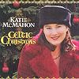

Celtic Lyrics Corner > Artists & Groups > Katie McMahon > Celtic Christmas > What Child Is This
|  | What Child Is This |
| Credits : | King Henry VIII; lyrics by W. C. Dix; arranged by Katie McMahon |
|
a) What Child Is This
b) Greensleeves Jig |
|
| Appears On : | Celtic Christmas |
| Language : | English |
| Other Versions : | " What Child Is This? " on Moya Brennan's album An Irish Christmas |
Lyrics :
What child is this who laid to rest
On Mary's lap is sleeping?
Whom angels greet with anthems sweet
While shepherds watch are keeping?
This, this is Christ the King
Whom shepherds guard and angels sing
Haste, haste to bring Him laud
The babe, the son of Mary
So bring him incense, gold and myrrh
Come, peasant, king, to own Him
The King of Kings salvation brings
Let loving hearts enthrone Him
Raise, raise the song on high
The virgin sings her lullaby
Joy, joy for Christ is born
The babe, the son of Mary